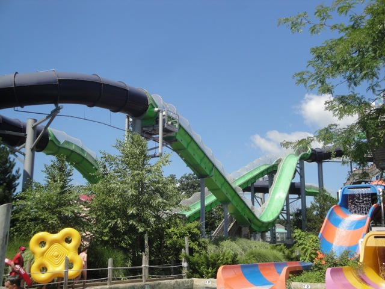
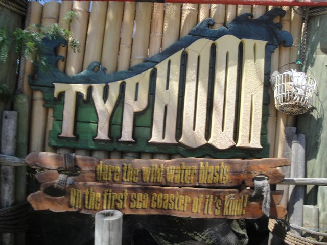

| |
Typhoon Review

We're here at Six Flags New England, in their Hurricane Harbor Water Park, and we're here to ride their star water slide. Typhoon. After climbing a long flight of stairs, we pick up our tube, and we're off. We roll around a turn before DROP!! Yep, we head down a small drop, and it gives us quite a lot of speed. Yeah, this is pretty fun. We then head up a hill. And sadly, there's no airtime here. As a matter of fact, there's no speed here at all. We're crawling at this point. We then head into an eclosed turn. If we didn't know any better, you could easily assume that this was just an ordinary water slide at this point. Though we do get a nice little boost at the top, so that's fun. We then pop out into another drop. Wee!! And it's the same ordeal. Rise up, lose all your speed. Speed boost at the top, enclosed section, fun turns. You know the whole drill. After a couple turns in the dark, we pop out and drop to the ground. We gain some speed and head over a hill. And unlike all the other hills, we have some leftover speed and even get a nice moment of floater air. It's not strong by any means, but on a water slide, you notice airtime more. We rise up into another hill and go through some more enclosed turns. It's fun and all, we go through some S Curves and just have a good time. And then SPLASH!! We enter into the pool. Typhoon is a fun water coaster and all. I wouldn't put it on my Top 10 Water Slides List, and it's not nearly as good as Wildebeest, but it's still without a doubt, a really good water slide, and even one of the better Water Coasters (better than Master Blaster). So if you're gonna visit Six Flags Hurricane Harbor, then definetly take a slide on Typhoon.
8/10
Location: Six Flags New England
Opened: 2005
Built by: ProSlide
Last Ridden: July 30, 2011
Typhoon Photos

Home
|